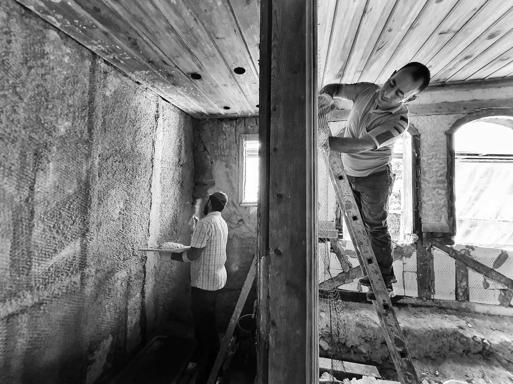

Does Insurance Pay to Rebuild After Water Damage?
If the water loss is covered, most policies pay to restore your Plano home to pre-loss condition, including drywall, flooring, cabinets and paint, based on an approved estimate.
One TeamOne Team From Mitigation to Final Paint
The most frustrating part of a water loss is often what happens after drying. The mitigation crew leaves, and you're left looking for a contractor, getting bids and waiting weeks while living with exposed studs.
We keep it under one roof. If we handled your mitigation, we already know what was removed, why, and what the moisture readings showed. That means a faster, more accurate rebuild estimate and no gaps between phases.
If another company did your mitigation, we can still take over. If a mitigation company cut out your walls and floors and you're wondering who puts it back in Plano, that's exactly what we do.

Post-Mitigation Put-Back Services
Drywall, Texture and Paint
Hanging, taping, bedding, texture matching (orange peel, knockdown, smooth) and interior painting. Ceiling repairs blended so patches don't show.
Insulation
Wall and attic insulation replaced to match or improve what was removed.
Flooring
Hardwood, engineered wood, luxury vinyl plank, tile, carpet and pad. We match existing flooring as closely as possible, or help you choose replacement.
Cabinets and Countertops
Base cabinet replacement or rebuild, toe-kicks, countertop removal and resetting, sink and appliance reconnection coordination.
Trim and Carpentry
Baseboards, door casings, shoe molding, closet shelving and finish carpentry.
Bathrooms and Kitchens
Subfloor repair, vanity replacement, tile work and fixture resets after major leaks.
Kitchen and Bathroom Rebuilds After Major Leaks
Kitchens and bathrooms take the hardest hit from slab leaks, dishwasher leaks and toilet failures, and they're the most complicated rooms to rebuild. Cabinets, countertops, plumbing, tile and appliances all have to come back in the right order.
| Phase | Typical Work |
|---|---|
| 1. Prep | Confirm dry readings, final demolition, subfloor or slab repair |
| 2. Rough work | Framing repairs, insulation, any needed plumbing or electrical by licensed trades |
| 3. Drywall | Hang, tape, bed, texture |
| 4. Cabinets & flooring | Install cabinets, set flooring, install countertops |
| 5. Finish | Trim, paint, fixture and appliance reconnection |
| 6. Walkthrough | Final review with you before we call it done |
Working With Your Insurance Adjuster on the Rebuild
Rebuild estimates are written in Xactimate, the same software most insurers use, so line items line up with how your adjuster reviews them. If hidden damage turns up during the rebuild, such as rotted subfloor or damaged framing, we document it and submit a supplement with photos and explanation.
A few terms you may hear:
- RCV (Replacement Cost Value): what it costs to replace the damaged item new
- ACV (Actual Cash Value): replacement cost minus depreciation
- Recoverable depreciation: the amount some policies release after repairs are completed
Every policy is different. We'll help you understand your estimate and what documentation your insurer needs to release payments.
FinishesMatching Your Floors and Finishes
Continuous flooring is a common challenge in Plano homes, where hardwood or tile often runs through several rooms without a break. Patching one room with a slightly different product can look obvious. We document the layout so your adjuster can see the flooring is continuous, and we source the closest possible match.
Saved your floors with hardwood floor drying? We'll handle any refinishing once the wood has fully settled.
CodePermits and Code
Most drywall, flooring and cabinet work doesn't need a permit, but some rebuilds do, especially when structural, electrical or plumbing changes are involved. Where City of Plano permits are required, the work is permitted and inspected as needed, and licensed trades handle the regulated work.
OptionsRestoring to Pre-Loss Condition, or Upgrading
Your insurance claim covers returning your home to its pre-loss condition. Some homeowners use the rebuild as a chance to upgrade, for example from carpet to LVP or to new cabinets. We can separate upgrade costs from claim-covered work so the estimate stays clean.